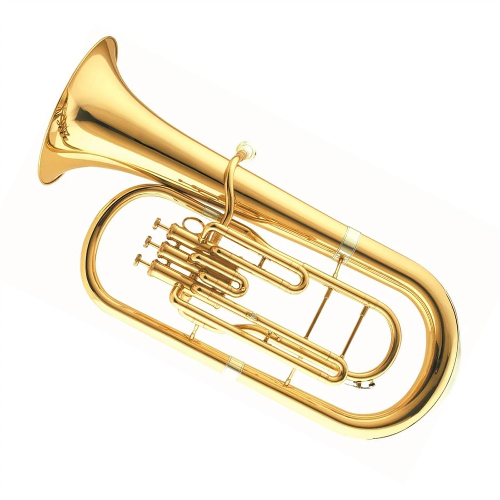

My biggest interest is Music I listen to music a lot and I can also play some instruments, in the
past I
played trumpet and euphonium in brass band, and now I play accordion and melodica as a hobby. Also, here are
some musicians I like:
Łona i Webber
Geordie Greep
Tally Hall
I'm a big fan of hip-hop music, but lastly I've been listening to a lot of indie rock and so-called math
rock, I also like jazz and electronic music.

Euphonium
I really enjoy playing video games , my favourite genre is RPG, but I also like rhythm games, and
sandbox /
survival games. Here are some titles I like:
The Witcher series
Dark souls series & Elden ring
Kingdom come Deliverance series
The Elder Scrolls Series
Dishonored series
Disco elysium
Factorio
Factorio
I also read quite a lot, I'm also a fan of japanese literature. I use my ebook reader to read book in
digital form and here are some books I like: